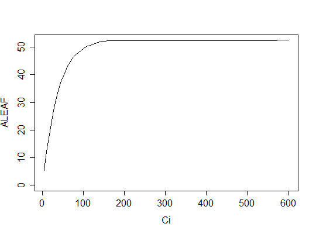

Usage
AciC4(Ci, PPFD = 1500, Tleaf = 25, VPMAX25 = 120, JMAX25 = 400, Vcmax = 60, Vpr = 80, alpha = 0, gbs = 0.003, O2 = 210, x = 0.4, THETA = 0.7, Q10 = 2.3, RD0 = 1, RTEMP = 25, TBELOW = 0, DAYRESP = 1, Q10F = 2, FRM = 0.5, ...)
Arguments
- Ci
- Intercellular CO2 concentration (ppm)
- PPFD
- Photosynthetic photon flux density (mu mol m-2 s-1)
- Tleaf
- Leaf temperature (C)
- VPMAX25
- The maximum rate of PEP carboxylation (mu mol m-2 s-1)
- JMAX25
- Maximum electron transport rate (at 25C)
- Vcmax
- Maximum rate of carboxylation (mu mol m-2 s-1) (at 25C)
- Vpr
- PEP regeneration (mu mol m-2 s-1)
- alpha
- Fraction of PSII activity in the bundle sheath (-)
- gbs
- Bundle sheath conductance (mol m-2 s-1)
- O2
- Mesophyll O2 concentration
- x
- Partitioning factor for electron transport
- THETA
- Shape parameter of the non-rectangular hyperbola
- Q10
- T-dependence parameter for Michaelis-Menten coefficients.
- RD0
- Respiration at base temperature (RTEMP) (mu mol m-2 s-1)
- RTEMP
- Base leaf temperature for respiration (C)
- TBELOW
- Below this T, respiration is zero.
- DAYRESP
- Fraction respiration in the light vs. that measured in the dark
- Q10F
- T-dependence parameter of respiration
- FRM
- Fraction of dark respiration that is mesophyll respiration (Rm)
- ...
- Further arguments (currently ignored).
Description
An implementation of the A-Ci curve for C4 plants, based on von Caemmerer et al. (2000)
Details
Note that the temperature response parameters have been hardwired in this function, and are based on von Caemmerer (2000).
Note that it is not (yet) possible to fit this curve to observations of photosynthesis (see fitaci to fit the C3 model of photosynthesis).
References
Caemmerer, S.V., 2000. Biochemical Models of Leaf Photosynthesis. Csiro Publishing.
Examples
# Simulate a C4 A-Ci curve.
aci <- AciC4(Ci=seq(5,600, length=101))
with(aci, plot(Ci, ALEAF, type='l', ylim=c(0,max(ALEAF))))
